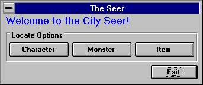

The City: Seer

Characters are easiest for the Seer because he knows what types of energy to look for, often allowing him to tell you exactly where they are. If a character is close, the Seer usually has no problems, however, when the character is deep in the dungeon, sometimes it takes the Seer many tries and lots of gold before he can get an exact fix on the character.
The next most useful ability of the Seer is that of locating Monsters and Items. This information is very useful to characters with a quest they must fulfill to advance in their guild. When the Seer is looking for a monster or item, he needs to know what it is called. Once given the proper name, he can often locate a general area of the dungeon where a creature may reside, or a general creature type that may carry the item of the quest.
Even though the Seer doesn't charge nearly as much as the Morgue Rescuers do, the total cost can add up when attempting to locate a character, monster, or item deep in the dungeon.
To execute an option, click on the appropriate button and follow the given directions.
Move to the next section to read about the City Store.
Move to the previous section to read about the City Morgue.
M1: "The Depths of Dejenol" is a Trademark of Decklin's Domain Ltd and is © Copyright 1994-2026 All Rights Reserved